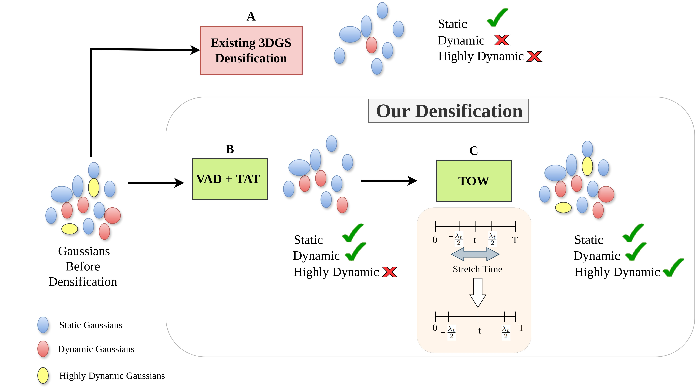
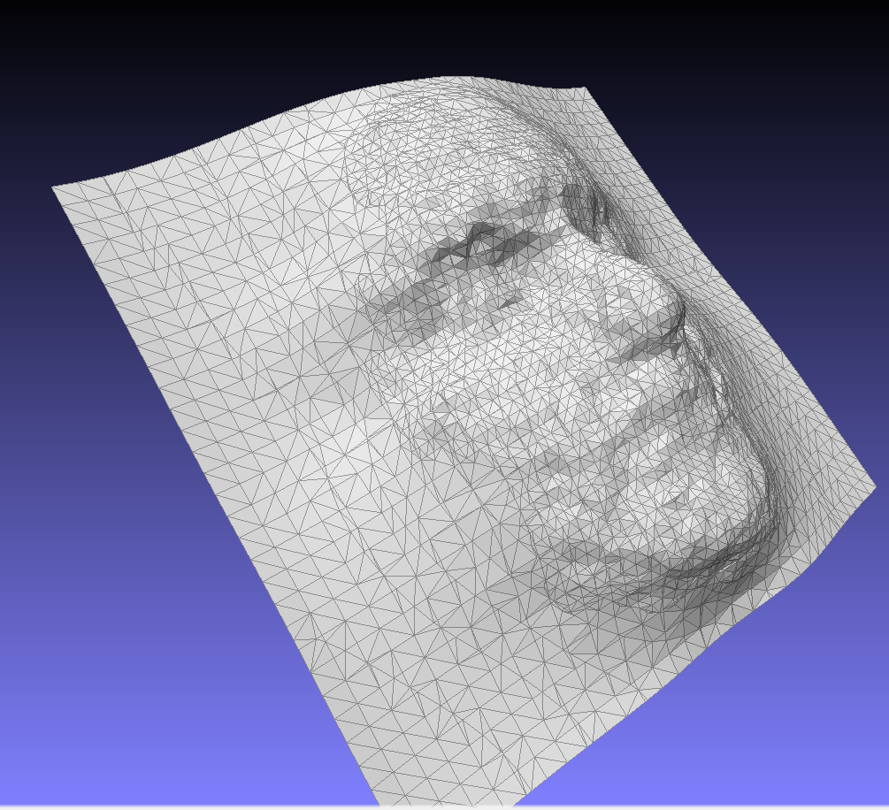

TAD-GS: Temporally Aware Densification for Dynamic 3D Gaussian Splatting
Vikram Sandu, Mayurdeep Pathak, Rajiv Soundararajan
European Conference on Computer Vision (ECCV), 2026

Novel Hybrid Teleophthalmology: Technological Case for Oculofacial Surgery
Roopak Tamboli, Vikram Sandu, Soumya Jana
9th Annual IEEE Global Humanitarian Technology Conference (GHTC), 2019, Seattle, USA
3D Reconstruction of the Human Face using Multi-stereo Camera Network
Vikram Sandu · Advisor: Dr. Soumya Jana
M.Tech Thesis, IIT Hyderabad, July 2019